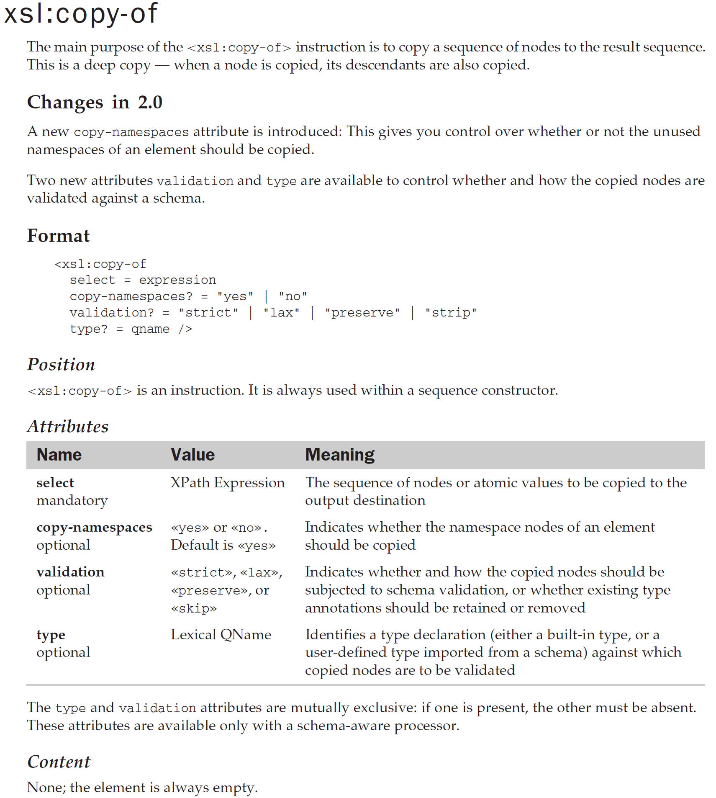
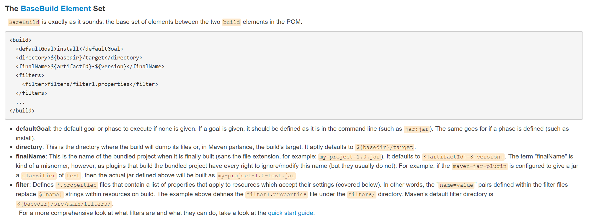
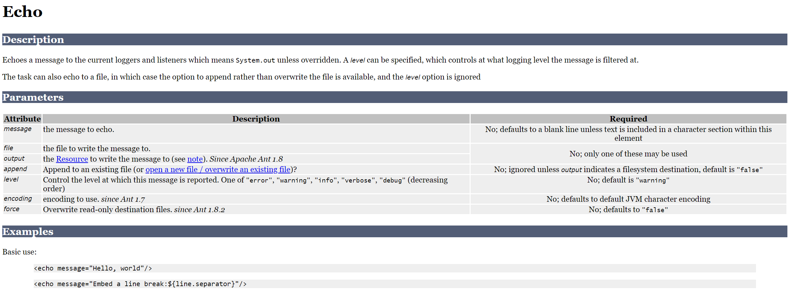
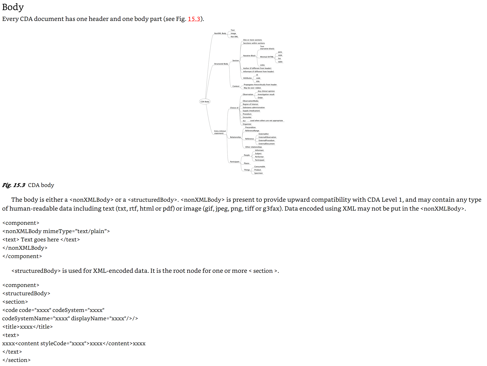
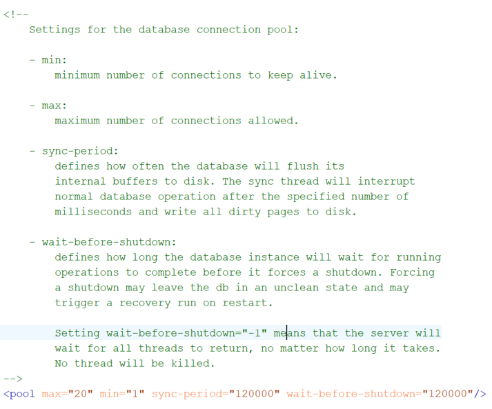

If we in our line of work encounter an XML structure we don't know yet, finding some description is usually just a web-search away. Google, Stackoverflow and the likes will often come up with some example, solution or description to help us. This is what I call "cookbook" level understanding: You don't really know what you're doing but you found a recipe and, hey, it works (or not).
But what if you really need to understand the format and its implications? For instance because it's a programming language you need to master. Or the application it serves is important to you. You start digging and hopefully find some kind of in-depth explanation of the structure. Do this more than once and you'll find there is no uniform way of documenting such a thing. Let's have a look at a few:
A lot of people in the XML community know Michael Kay's XSLT book (Michael Kay; XSLT 2.0 and XPath 2.0 Programmer's Reference, 4th
edition; Wiley Publishing). Since an XSLT program is an XML structure, the book needs to explain this. Here's an excerpt from the
explanation of the <xsl:copy-of>:
Figure 1. An excerpt from the documentation of XSLT
|  |
All XML structure descriptions look this way, with as most important parts: short introduction, a standardized formatted impression of what it looks like, a table explaining the attributes and a description of its contents.
The documentation of Maven POM (Project Object Model) files can be found on the Apache Maven POM site (https://maven.apache.org/pom.html). Here's an example:
Figure 2. An excerpt from the documentation of Maven POM files
|  |
This follows a different approach: Short introduction, example XML fragment, explanatory text with a lot of bullets.
Another example we're probably all familiar with is Ant. Ant's documentation can be found on the Apache Ant site (https://ant.apache.org/manual/). Building blocks of Ant are tasks. Here's an example of a task description:
Figure 3. An excerpt from the documentation of Ant
|  |
The documentation follows a consistent pattern: Description, parameters (which are attributes), description of nested elements (for brevity reasons not shown) and examples.
Here's an example of something only a few will be familiar with: HL7 CDA (health Level 7, Clinical Document Architecture), a standard for the exchange of healthcare information. In a book that tries to explain this and more (Principles of Health Interoperability, SNOMED CT, HL7 and FHIR; Tim Benson, Grahame Grieve; Springer-Verlag), I found the following way of explaining the CDA XML structure:
Figure 4. An excerpt from the documentation of HL7 CDA
|  |
They use a tree diagram to outline the structure followed by a short explanation followed by (badly formatted…) examples of XML structures and more text to explain these.
conf.xmlA last example comes from the documentation of eXist-db's conf.xml file. This is the main configuration file for
the database.
Figure 5. An excerpt from the documentation of eXist-db's conf.xml
|  |
This file has no separate documentation page or document. Instead everything is documented using XML comments inside the file itself.
These are just a few examples and they illustrate there are very different of documentation formats out there. Now everybody probably has his/her preferences and not every format needs the same kind or level of documentation, so can we say something in general about it? Let's try:
A major factor in the comprehensibility of the descriptions is consistency. All parts of the structures must be explained in the same way, using the same (sub)sections and lay-out. This becomes more and more important when you use the XML structure on a regular basis. Your eyes and brain get used to the format and can quickly and easily find the things you want to know.
The structure description must be correct and complete. No unmentioned surprise attributes for special occasions, no missing discrete value lists, etc.
On the other hand: Constructions or values that will rarely be used should be recognizable as such. You don't want to spend time understanding this weird attribute that seems important, finding out it will only rarely be used, much later…
The format should be easy to interpret. Meaning should almost pop-up from the page by just looking at it. This means judicious use of all the lay-out tools we have: sections, tables, colors, fonts, whatever. An attractive look is almost a necessity (you don't get a second chance for a fist impression).